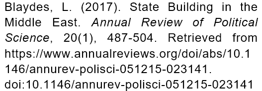

收录于合集
、
作品简介
** 【作者】** 丽莎·布莱德斯(Lisa Blaydes),斯坦福大学政治学系教授、弗里曼·斯普利国际研究所(Freeman Spogli Institute for International Studies)高级研究员，著有《穆巴拉克统治下的埃及的选举与分配政治》（Elections and Distributive Politics in Mubarak’s Egypt）等专著，并在《美国政治科学评论》、《国际研究季刊》、《国际组织》、《中东期刊》和《世界政治》等知名学术刊物上发表论文。她拥有加州大学洛杉矶分校政治学博士学位和约翰·霍普金斯大学国际关系学士、硕士学位。
【编译】 许文婷（北京大学）
【校对】 王泽尘
【审核】 崔宇涵
【排版】 贺奕
【来源】

期刊介绍
政治科学年度评论（ Annual Review of Political Science ）是年度评论系列（Annual Reviews）旗下的一本年度刊物。该刊自1998年出版以来，涵盖了政治学领域中的重要发展，包括政治理论与政治哲学、国际关系、政治经济学、政治行为、美国政治、比较政治学、公共政策以及方法论等。其2019年的影响因子为3.915。
** 中东地区的国家建构**
State Building In the Middle East

丽莎·布莱德斯
内容提要
关于中东地区国家建构有影响力的历史著作大多集中于欧洲殖民主义对该地区现代国家建构的影响，这一路径强调了欧洲势力在一战前对该地区的版图划分中所起的作用，它也是有关中东地区国家建构的学术著作和媒体文章中的主流话语。学者们也深入探究了殖民势力如何影响了该地区国家能力的形成，提供了许多具有批判性的洞见。
这些集中于十九至二十世纪的资料在研究近代中东国家发展方面具有重要价值，但它们在一定程度上忽视了近代以前中东地区漫长的国家建构历史。同时，由于欧洲殖民主义是中东地区国家相对虚弱性的内生解释变量，因此很难清晰地剥离出欧洲殖民主义对后殖民时代中东地区的影响。
本文从一个长期、历史性的角度考察了中东地区的国家建构。中东地区很早就完成了向农业定居的过渡，这使其成为了许多古代世界最发达的国家的孕育之所。中东地区的国家产生于古典时代晚期，它们的财政与官僚行政能力使之能够形成在欧洲无法实现的制度形式。这包括国家军事精英对军事奴隶的依赖，以及土地国有和采邑制度。由于乡绅阶级在漫长的时间内一直未能成为有影响力的社会阶级，作为伊斯兰慈善基金掌控者和社会福利提供者的宗教精英们成为了国家和社会之间的中介角色。伊斯兰古典时期的核心制度一直作为主要形式持续，直到奥斯曼帝国的衰落和民族国家的崛起。
文章导读
一、政治地理环境和早期国家的影响
中东地区的政治地理环境有两个独特之处，其一是埃及与两河流域适宜农耕，为中东地区早期农业定居社会的形成提供了条件；其二是在这些肥沃的农耕地区外围存在着大量的贫瘠区域，其中最为典型的就是沙漠。它们也分别导向了中东地区的两大政治传统。
1、 专制政体与早期国家的发展
近东地区产生了世界上最早的城市、国家和官僚体系，农业技术领先西欧长达千年。威特福格（Wittfogel）曾提出著名论断，认为那些大河文明，或者说发展出了完备的水利灌溉和抗洪系统的文明，更容易产生集权和威权的政体。这一现象在中东地区同样存在，例如肯尼迪（Kennedy）指出，中东地区农业部门的需求，比如灌溉技术，需要长期的劳动力和高水平的政治组织。虽然这一论断被指证据不够充分，但学界普遍同意大部分成功的前现代社会都倾向于产生集权和威权的国家形式。然而，哈里里（Hariri）则提供了一种早期农业影响民主和社会发展的路径。他认为农业和定居文明的出现时间与发展程度能够影响欧洲殖民是否发生在该地区，以及其可能的影响强度。在这一前提下，与欧洲殖民体制的接触使促进民主的体制得以进入本地社会。相对于世界其他地区而言，中东地区受欧洲殖民程度较轻，欧洲殖民者在中东更少地采用直接定居的方式，而更多地采取一些间接的治理手段，这也使得传统的威权结构得以延续。
2、 外围沙漠地区和游牧部落的 “ 悖论 ”
肯尼迪在其书中写道，将穆斯林世界与欧洲、印度和中国区分开的最大的人文地理特征是：在定居农业地区的周围“存在着大量的游牧民族，且他们影响巨大，有时是毁灭性的，有时则导向大的国家和帝国的建立”。他提出世界上真正的游牧民族聚居区只有三处：阿拉伯半岛和叙利亚的沙漠、中亚草原和非洲的撒哈拉沙漠，这些地区毫无例外地都位于中东核心地带的边缘。
外围沙漠地带的存在使得中东地区的中心农业区和主要城市始终面临着社会动荡的威胁。对定居文明的劫掠一直是游牧民族获得经济收入的主要来源，因此，游牧的贝都因人(the bedouins，البدو) 被视为潜在的“不稳定因素”。而由于缺乏有效管理的城镇更容易遭受外围游牧民族的侵扰，中东社会的公民们普遍十分重视政治领导，将其视为应对外部威胁的重要保障。阿拉伯著名历史学家伊本·赫勒敦（Ibn Khaldun，ابن خلدون）指出，游牧民族高水平的社会凝聚力使其能够横扫中东，建立起自己的政治帝国。肯尼迪则提出了他的“游牧民族悖论”(Nomadic Paradox)：定居社会有着更发达的官僚体系和更健全的补给链，在军事能力上较游牧民族有绝对优势，但游牧民族有着高水平的机动性、卓越的马背作战能力和对艰苦环境过人的忍耐力、以及任人唯贤的传统，因此往往更容易在以骑射为主的战争中获胜。伊斯兰教的兴起与传播也被视作游牧民族在战争中优势的体现。
二、前伊斯兰时期对“穆斯林统治”的影响
在古典伊斯兰时代被称为“穆斯林统治”的统治形式，反映了前伊斯兰时期和其他随着伊斯兰教的产生和传播而兴起的各种元素的混合。历史学家们聚焦于拜占庭帝国和萨珊帝国等帝国结构对中东地区的影响，这表明古典时代晚期的国家体制和同时期古希腊（Hellenistic）、波斯（Persian）有关善治的思想延续到了伊斯兰时期。
1、 自古典时代晚期继承的国家制度
许多与古典时代晚期国家有关的制度都或多或少被古典伊斯兰时代继承，这主要体现在国家官僚体系的本质与范围，以及进行经济交易的方式上。 最明显的制度继承来源于那些被阿拉伯军队征服的国家的官僚结构，特别是前伊斯兰时期在中东地区居于主导地位的各帝国的行政体系，它们对早期伊斯兰国家的运作有着重要作用。这一事实佐证了中东地区的国家形式比其他后罗马时代的地区，特别是西欧的国家形式更具有连续性的观点。
被继承的希腊、科普特和波斯的官僚体系在伊斯兰时期依然在国家行政中被广泛应用，而官僚人员也很大程度上来自于宗教少数族群，例如科普特基督徒，尽管这一官僚阶层最终皈依了伊斯兰教。官僚行政系统最终与穆斯林宗教相适应并被合理化，尤其是在国家立法方面，主要处理犯罪和征税的国家法律在苏丹的统治下逐渐与伊斯兰法融入到了一个立法系统之中。
另一种不那么具有字面意义的“制度性”的遗产来源于部落的实践与规范。克罗恩（Crone）提出部落和国家是互为替代的社会组织形式，尽管由真实或虚构的血缘关系形成的部落是有关社会控制问题的模式化解决方式，但他认为相比之下国家更具权力，组织上也更为发达。然而，他也承认，阿拉伯人的部落价值观超越了其形成时的原情境，对伊斯兰世界持续地施加着影响，直至今日。哈拉克（Hallaq）也同样指出，中东的穆斯林领袖们被要求在他们所继承的部落社会内部行事，“这一历史遗产反映了过去的行动和具体的行为方式所积累的历史”。
2、 前伊斯兰时期的国家理论
前伊斯兰时期的主要制度元素成为了早期伊斯兰国家的重要组成部分，而从另一个更为抽象的方面来说，近古时代有关治理的思想也对古典伊斯兰时代产生了很大的影响。
历史上的中东社会从丰富多样的国家组织和统治者文化模式中汲取了经验，这有可能，至少从部分程度上来说是受该地区的面积广大，而又处于亚非欧大陆的中心所影响的。古希腊的思想遗产一直被认为对中东地区的政治思想产生了重大影响。
布里叶（Bulliet）提出，希腊文化的一大特点就是对其广袤领土内众多思想和宗教信仰的开放与包容。在他看来，伊朗的帝国政府模型也是也是古希腊传统的一部分。这一时期形成的希腊- 波斯的政治智慧，以及印度的和前伊斯兰时期阿拉伯的政治思想共同影响和塑造了伊斯兰时期的政治理念。以阿拔斯王朝为例，这种思想融合的其中一种途径就是通过宫廷秘书们，其代表性人物就是伊本·穆格法 (Ibn al-Muqaffa，ابن المقفع)。他的著作体现了波斯、阿拉伯、琐罗亚斯德教和伊斯兰教政治思想最终融合于早期阿拔斯政治思想。
三、伊斯兰古典时代的国家制度
伊斯兰古典时代的政治制度既继承了前穆斯林时期中东的制度与思想遗产，又反映了阿拉伯人征服期间和之后产生的政治治理方面的创新。制度和思想上的连续性既体现在被征服国家的官僚制度遗产上，也体现在被带入伊斯兰古典时代的前伊斯兰时期有关治理的思想上。在阿拉伯人征服后建立起的政治体制主要的任务是维持政治秩序。
在穆斯林统治时期花样繁多的统治形式中，我们可以找到一些共性的主线，其一是作为军事精英们支柱的军事奴隶的广泛使用，其二是国家对农耕土地的控制。 这两个主要制度的一个衍生品是作为 制衡 国家中央权力的宗教精英的产生。
**
**
1、 军事奴隶和国家对土地的控制
与西欧的封建君主不同，苏丹们从不会以封赏土地的形式向他们的士兵发放军饷。阿拔斯王朝在治国理政方面的一大创新就是使用外国军事奴隶（mamluk，مملوك）作为军队的支柱性精英群体。当阿拔斯王朝无法招募到足够多的士兵来应付内战之时，哈里发选择了从中亚招募奴隶作为士兵。穆斯林在经济和官僚制度上的绝对优势使他们能够从外国进口军事奴隶，而不是像西欧那样建立土地分封制度。
自九世纪阿拔斯王朝开始使用军事奴隶以来，这一行为逐渐扩展到整个中东地区，并成为了数百年来该地区的政治决定性特征之一。尽管这些被称作“马木鲁克”的军事奴隶受训良好，领着丰厚的薪水，但他们无法建立起世袭的土地贵族体系，这主要是因为他们无法将马木鲁克的身份传给后代。此外，这些军事奴隶被有意地和当地社会隔绝开了，军队也不断吸纳来自中亚的新鲜血液取代原有成员，以防止士兵们以各种途径建立起本地势力。
与这一制度紧密相连的是向他们赐予暂时性的从农业土地获取税收的权力，作为支付他们薪资的主要方式。这一制度被称为采邑制度（iqta，إقطاع），最早产生于十世纪中期的伊拉克，后来传播到伊朗、阿富汗、叙利亚和埃及。需要注意的是，采邑制度只赋予了军事奴隶们对特定土地征税的权力，而不包括土地的所有权，采邑也无法继承或出售。这也是为什么欧洲的封建领主们扮演着“地头蛇”的角色，采邑的所有者们却无意为封地内的百姓提供公共物品。尽管马木鲁克们极力争取将采邑可继承化，中东地区的国家从未在这一问题上做出过让步，中东也成为了当时世界上少有的“几乎所有土地直接属于国家”的地区。
2、 古典时代的伊斯兰法律制度
在伊斯兰古典时代，土地与政治权力高度集中于国家，精英阶层担忧个人财富会被国家掠取，伊斯兰慈善信托（waqf，وقف）应运而生。这一制度使得富人能够保护他们的财产不受国家攫取，并在遵守伊斯兰教法律的情况下有权决定如何处置自己的遗产。
这些慈善信托受宗教领袖们的管辖，而他们则利用这些信托资金支持国家未能提供的公共服务，例如学校、朝觐者驿站、公共浴室、喷泉、医院等。库兰（Kuran）将这一信托制度描述为向社会精英们提供财产安全的保障，以换取他们在社会公益方面的投资。布莱德斯（Blaydes）和查内（Chaney）则指出信托制度是在军事奴隶被引进后作为有政治影响力的团体崛起的宗教领袖和国家领导们博弈的产物。
通过对提供公共物品的控制，宗教精英们成为了国家和社会利益间重要的中介者，而通过巧妙地利用公民权力，他们也能确保当统治者们把攫掠之手伸向宗教信托时必然要付出应有的代价。
**
**
四、突厥人、蒙古人和草原战士的国家
公元八至十一世纪，基督教和伊斯兰教世界的分界线渐趋稳定，双方都致力于维护现有疆界而非开疆拓土。但自十一世纪始，几次大的异族入侵影响了地区国家建构的进程。“新的蛮族入侵”，特别是来自中亚草原的突厥人，“改变了社会平衡”，导致了国家建构和社会组织的一个新时期。尤其是十三世纪蒙古人的入侵被历史学家们视为伊斯兰世界政治和经济上的“分水岭”。此外还有来自另一方面的外部入侵，即十字军国家在黎凡特地区的建立，但本文对此不做详细讨论。
事实上，中东地区对“异族统治”并不陌生，在经历几大帝国的统治、阿拉伯人的征服和外国军事奴隶最终形成的军事统治后，异族的统治在中东更像是一种常态而非例外。
1、 突厥人的入侵和塞尔柱王朝的建立
突厥政权的崛起和最终占据主导是中东地区国家建构历史上的一次重要发展。突厥人并非起源于同一部落，但都使用不同类别的突厥语言，并大都拥有中亚草原血统。其中最为著名的是塞尔柱人，他们最终建立起了一个横跨安纳托利亚大部、黎凡特、美索不达米亚、波斯和中亚大部的广阔王朝。
读者或许会认为来自中亚草原的突厥政权无需继续引进军事奴隶服兵役，但事实却正好相反，突厥人的军队也变得开始依赖外国军事奴隶。1087年，塞尔柱王朝著名的维齐尔（vizier，وزير）尼扎姆·莫尔克（Nizam al-Mulk，نظام الملك）向军官们授予采邑。按照塞尔柱王朝的理念，“帝国及其一切附属品都为苏丹所有”，受封采邑者只是土地的保护者而非所有者。换句话说， 伊斯兰古典时期政权的两大支柱，对外国军事精英的依赖和农业土地国有都在塞尔柱王朝得到了延续。
尼扎姆·莫尔克也被认为是塞尔柱王朝时期另一大影响重大的政治制度革新的首倡者，即宗教生活的制度化。突厥人的王朝被视为“狂热的”逊尼派政权，他们通过建立伊斯兰宗教学校（madrasa,مدرسة）来规范宗教生活。对这些宗教学校的一大核心争论就是它们与科技进步的关系，哈定（Harding）认为伊朗和中亚的宗教学校促进了科学研究的发展，但查内(Chaney)反驳道由于宗教学校把宗教教育置于其他科目之上，这在一定程度上阻碍了伊斯兰世界科学技术的进步。
突厥政权的建立也革新了中东的政治思想，他们认为政治权威是“对开国者的神圣馈赠”。这种把统治者理想化的倾向在塞尔柱王朝反复出现，使中东的政治思想“从古希腊和地中海的传统转向了中亚”。
2、 蒙古人的入侵与移民
蒙古人的入侵不仅对中东地区，而是对整个欧亚大陆的历史来说都是一个转折点。他们开启了“伊斯兰历史上的全新一页”。蒙古人将大量的草原人民带入了中东地区，他们摧毁了城市和军事要塞，也使得大量民众流离失所。
蒙古人的统治也带来了国家治理形式的改变。巴菲尔德（Barfield）指出，蒙古人的等级社会结构倾向使得接受地位差异变得更为自然。曼兹（Manz）则认为蒙古人的统治标志着古典时代阿拉伯- 穆斯林文化的终章，和“将波斯传统与外来文化融合而形成的与阿拉伯文化日渐泾渭分明的新波斯风格”的崛起。
上述观点都表明突厥和蒙古人带来的草原移民使得“东部伊斯兰世界的经济、社会和政治环境都发生了很大转变”，最终产生了波斯和阿拉伯传统与突厥和蒙古影响“共生”的政治传统。这一新的“复合文化”为此后近代早期伊斯兰世界大的帝国的崛起奠定了基础。
五、从帝国式国家建构到民族国家
十六世纪以来，随着火药和热兵器的兴起，游牧民族逐渐丧失了他们在战争中的主导优势，对外扩张节奏趋缓，奥斯曼帝国作为一个能够打败或吸收中东地区各股部落势力的中央集权的国家产生。尽管奥斯曼帝国经历了一系列的制度变革，其核心体制始终受到此前中东地区国家的影响，包括集权官僚体系、采邑制度和军事奴隶的使用等。文书精英们也越来越成为国家管理的宗教机构的一部分，就社会关注的问题与市民沟通。
但这些体制因素似乎并未为稳健的经济增长创造条件。较低程度的行政约束和强有力的土地国有阻碍了有效投资的进行。而宗教精英相对强势的角色也妨碍了科学的创新。中东地区经济上的衰弱最终演变为了政治上的衰落。奥斯曼帝国的衰落和最终瓦解为现代中东民族国家的兴起做好了铺垫。
1、 奥斯曼帝国的国家制度
尽管西欧国家一直被视作国家建构的典范，但是奥斯曼帝国提供了另一种国家建构的路径。西欧国家以暴力征服反叛的族群，奥斯曼人却能通过协商处理诉求冲突，并以谈判和收编入国家组织结构的方式成功平息叛乱。
奥斯曼帝国这一手段得以成功实施的原因是奥斯曼苏丹享有的高度集中的政治权力。只有国家可以授予权力，国家机构则有能力吸纳和收编众多游离的和不守规矩的“挑战者”。
奥斯曼帝国也雇佣军事奴隶，主要通过强制招募帝国属地中的男性基督教儿童得来。他们被要求改信伊斯兰教，并被训练成为国家最高等级的军事役员。他们没有自己的权力或财富基础，一切都仅能从国家的渠道获得。
奥斯曼帝国也采用了一种被视为继承自采邑制度的政府拨地制度。因为土地依旧属于国有，政府将对某一片特定土地征税的权力赐予军事和其他领域的公务员，以支付其薪资。由于这一权力具有周转性，这些精英们和土地之间形成了一种与西欧地主与佃户之间十分不同的关系。事实上在奥斯曼帝国时期，有关土地的所有权和继承权一直是国家政府和精英阶层之间争斗的焦点之一。
2、 殖民入侵和奥斯曼帝国的衰落
中东地区在经济上的衰弱导致了其在面对殖民入侵时的脆弱性，这也是最终西欧国家超过中东而成为殖民力量的原因。 ****在 18世纪末期，中东地区在生活标准、购买力等方面已全面落后于欧洲。西欧的经济活动和殖民扩张又进一步加剧了奥斯曼帝国内部的经济和政治脆弱性。奥斯曼帝国开始进行一些被称为“防御性现代化”的努力，例如构造地主阶级和确保领土完整，鼓励私人财产和市场占据中心位置。1858年的土地法被视为奥斯曼帝国土地史的一个转折点，在此之后土地可以被私人所有，“大规模的地产在中东成为可能”。
西欧的工业化优势使其最终夺取了中东地区的经济主导权，并进而演化为政治控制。奥斯曼帝国在一战中的溃败暴露出该地区在面对欧洲军事力量时的不堪一击，也为中东地区现代民族国家的兴起做了铺垫。
随着一战的爆发，中东地区的现代国家开始形成，三个关键因素构成了这一地区制度遗产的核心特征。首先，20世纪的中东国家继承了王朝统治的遗产，这种统治由强大的、以城市为基础的军事精英所支撑，而不是由利益在议会等代议制机构组织起来的农村士绅所支撑。其次，相对较晚的农业土地私有制发展限制了土地拥有者阶层的政治权力和道德权威，也可能增加了社会对国家控制生产资源的接受程度。最后，虽然该区域的历史国家通常向社会提供安全和社会秩序，但公共物品通常由通过宗教慈善信托系统运作的宗教机构提供。这些机构提供的服务对社会的重要性，为管理这些机构的宗教精英提供了讨价还价的筹码。
六、结论
从长期角度来看，中东地区的国家在世界范围内有着较强的国家能力（state capacity），尤其是与西欧国家相比。在其古典形式下，中世纪的中东国家能够进行相对昂贵的精英军事制度化，包括引进和训练作为军队骨干的军事奴隶。同时，中东地区国家控制农业土地的方式不利于产生土地精英。西欧的国家建构历程为中东地区提供了一个很好的比较样本。自古典时代晚期以来，西欧的政治力量相对衰弱，这导致了与封建制度相联系的政治权力碎片化。而在中东地区，“国家本身从不缺席”。西欧国家的崩溃可能是促进增长的机构产生的关键，这些机构最终使欧洲享有相对于世界其他地区的经济优势。同样，中东国家的相对富有和持久性可能损害了其经济发展的长期前景，因为体制环境有利于国家及其公务员，而不是培养一个自主的和具有本土影响力的阶层。
_ ** _ ** _ ** _ 本文由国政学人独家编译推荐**__
扫下方二维码查看往期精彩
【新刊速递】第01期 | Review of International Studies Vol.45, No.4, 2019
【新刊速递】第02期 | International Relations Vol.33, No.3, 2019
分类导览 1
分类导览 2


点“在看”给我一朵小黄花
国政学人
支持学术公益与知识传播
微信扫一扫赞赏作者 __赞赏
已喜欢，对作者说句悄悄话
取消 __
发送给作者
发送
最多40字，当前共字
上一页 1/3 下一页
长按二维码向我转账
支持学术公益与知识传播
受苹果公司新规定影响，微信 iOS 版的赞赏功能被关闭，可通过二维码转账支持公众号。